- El reciclado del papel, juega un papel importante en la conservación de los bosques .
Una forma de ahorrar madera es obtener papel del papel usado.
Para la recogida selectiva de papel y cartón se emplean, por lo general, contenedores de color azul.
¿Qué se puede depositar en los contenedores de recogida de papel y carton?
- Papel de impresión y escritura.
- Sobres.
- Guías telefónicas.
- Catálogos, folletos periódicos, revistas, libros.
- Carpetas de papel, o cartulina.
- Hay diferentes calidades de papel. El papel puede reciclarse entre 3 y 8 veces y la pasta de papel recuperado
puede oscilar del 20 al 99% dependiendo de si se trata de papeles de prensa o cartones bicapa.
Usos del papel y carton reciclado:
- Papel de impresión y escritura.
- Papel higiénico.
- Papel de embalar.
- Papel de prensa.
EL carton es un material reciclable que es reciclado por pequeñas y grandes empresas para ahorrar dinero en los costes de eliminación de residuos.
El reciclaje de carto es el reprocesamiento y reutilización de láminas gruesas o papeles rígidos multicapas que han sido utilizados, desechados
o considerados como residuos. Las cajas de carton suelen ser hojas gruesas o muy resistentes de papel conocidas por su durabilidad y dureza.
Ejemplos de carton incluyen cajas de embalaje, cajas de huevos, cajas de zapatos y cajas de cereales.
Vidrio
- El vidrio es un material que por sus características es fácilmente recuperable.
El envase de vidrio es 100% reciclable, a partir de un envase utilizado puede fabricarse uno nuevo que tenga las mismas características.
Los envases de vidrio admiten esta operación de reciclaje tantas veces como sea necesario.
El vidrio es una sustancia dura y frágil, generalmente transparente, muy resistente al agua, a la luz y a los agentes químicos,
que se produce por solidificación de una masa fundida, más o menos compleja, de silicatos y en parte también de boratos.
Los contenedores verdes de vidrio situados en las calles sirven para recoger únicamente los envases de vidrio como tarros, frascos y botellas que todos consumimos.
Hay otros materiales, como pueden ser la cerámica u otros tipos de vidrio como vasos, cristales de ventanas, etc.
que al tener una composición distinta a la del vidrio de los envases, deben ser depositados en los puntos limpios de los pueblos y ciudades.
Para reciclar el vidrio, se fragmenta en partes pequeñas obteniéndose el calcín (vidrio seleccionado, limpio y molido), y no se pueden mezclar las botellas o envases de color diferente.
Las principales etapas en el proceso de reciclado del vidrio son:
- Limpieza inicial, separación de tapas y separación por colores.
- Reducción del volumen mediante trituración o rotura y separación de tapas y anillos metálicos que no han sido eliminados anteriormente. Es recomendable hacer la trituración o rotura del vidrio después de la separación por colores.
- El vidrio triturado se pasa por una criba adecuada para obtener el tamaño granulométrico deseado.
-Preparación y transporte. Por lo general, el vidrio se almacena hasta acumular la cantidad suficiente de un color que permita que su transporte a las fábricas de envases sea rentable.
- El lavado final se realiza en fábrica mediante un equipo especializado que separa los materiales residuales como el plástico y las etiquetas de papel.
- La última etapa consiste en mezclar los vidrios rotos con las materias primas utilizadas en la elaboración del vidrio. Seguidamente el lote se funde en un horno a una temperatura de unos 1.500 C.
El fundido cae sobre una máquina moldeadora donde se sopla o se moldea hasta conseguir la forma final. Los nuevos envases ya formados se enfrían en un túnel de recocido.
Finalmente, se inspeccionan para detectar posibles defectos, se embalan y se transportan hasta la compañía envasadora.
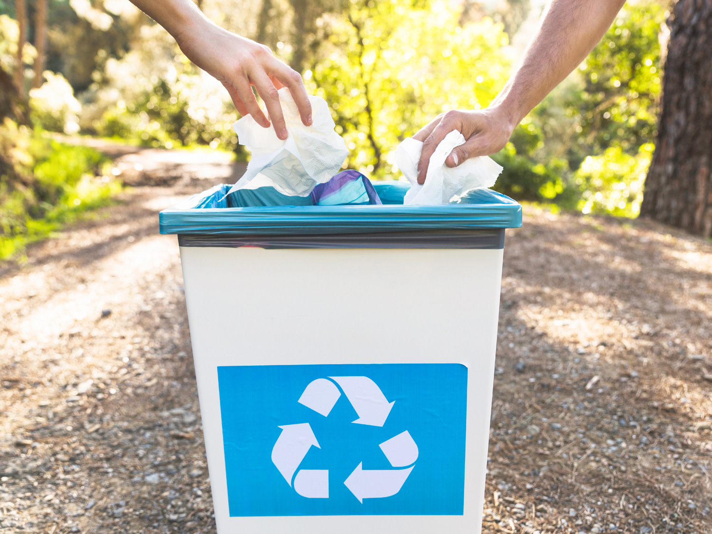
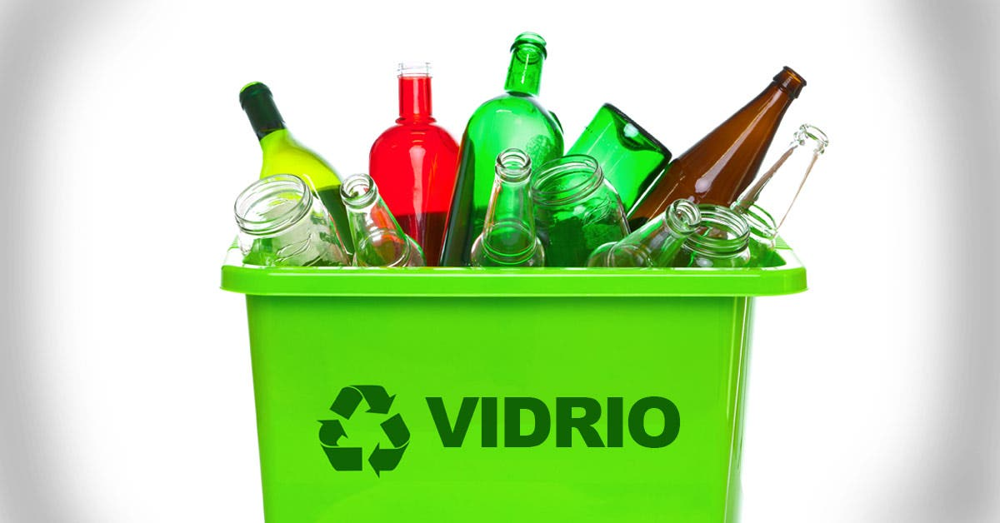
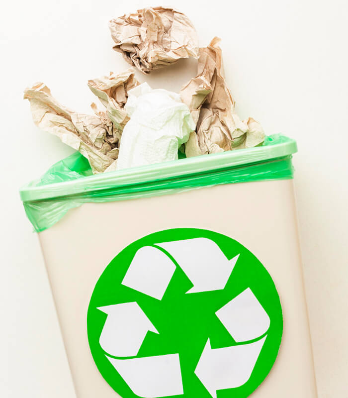
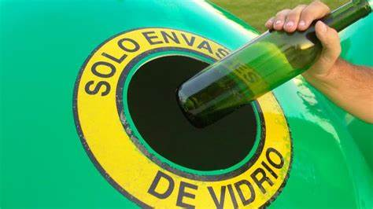
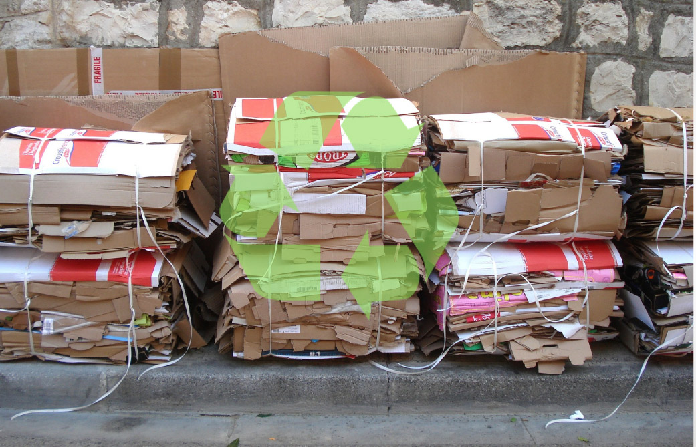
Papel/Cartón
Vidrio
El papel es compostable por lo que este podría convertirse en abono, estamos en una herramienta de gran apoyo para cuidar el medio ambiente.
Es uno de los materiales que se pueden reutilizar de una manera muy fácil, incluso en los hogares, simplemente se lava y ya se puede volver a utilizar.
El cartón es un material cien por cien natural. Se fabrica a partir de varias capas de papel superpuestas, que pueden proceder de fibras vírgenes o de papel reciclado.
Es impermeable, sin olor, soporta cambios de temperatura y de humedad, puede moldearse de múltiples formas y son herméticos.
El cartón es un material ligero pero a la vez resistente. Estas dos cualidades lo hacen ideal para formar estructuras livianas de gran volumen.
Los productos que se envasan en vidrio son hasta el 25 por ciento más económicos.
El uso de cartón ondulado supone una reducción de más de un 50% de las emisiones de C02 en comparación con la fabricación de plástico o aluminio.
El vidrio tiene la capacidad de poder aguantar temperaturas muy elevadas y muy bajas, pueden ser utilizados para productos calientes y fríos.
Referencias
https://www.reciclame.info/como-reciclarlos/papel-y-carton/#:~:text=Papel%20y%20cart%C3%B3n%20El%20reciclado%20del%20papel%2C%20juega,emplean%2C%20por%20lo%20general%2C%20contenedores%20de%20color%20azul.?msclkid=f29447afaadc11eca1f624908e2f0479
El reciclaje del vidrio: proceso, aplicaciones y ventajas. (s. f.). ECOagricultor. https://www.ecoagricultor.com/el-reciclaje-del-vidrio-proceso-aplicaciones-y-ventajas/?msclkid=9e8a0c00ab2211ecaed440b2d2274201
S. (s. f.-b). ¿Qué está hecho de vidrio reciclado? Spiegato. https://spiegato.com/es/que-esta-hecho-de-vidrio-reciclado?msclkid=93f5739baf7a11ec8e59cf94f8da1c23
 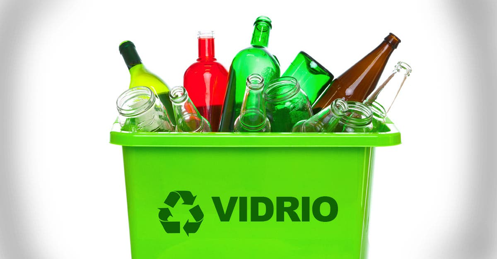
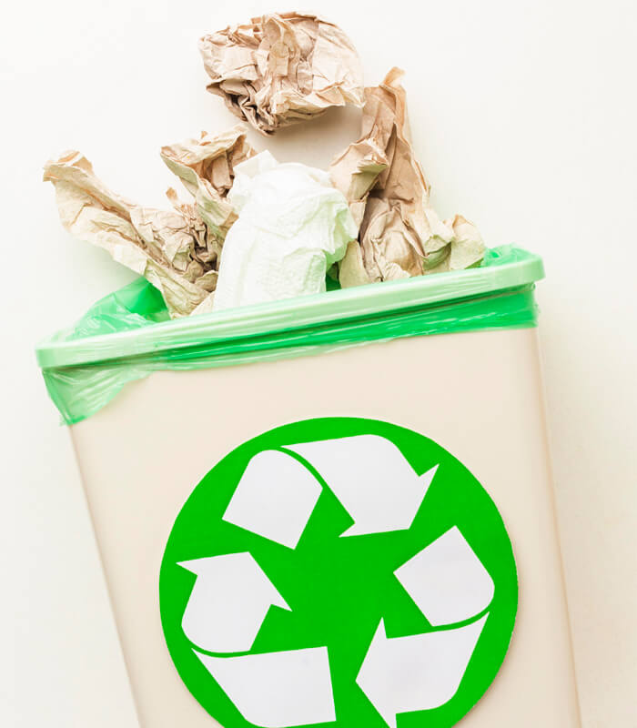
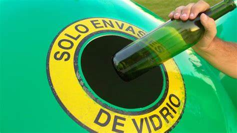
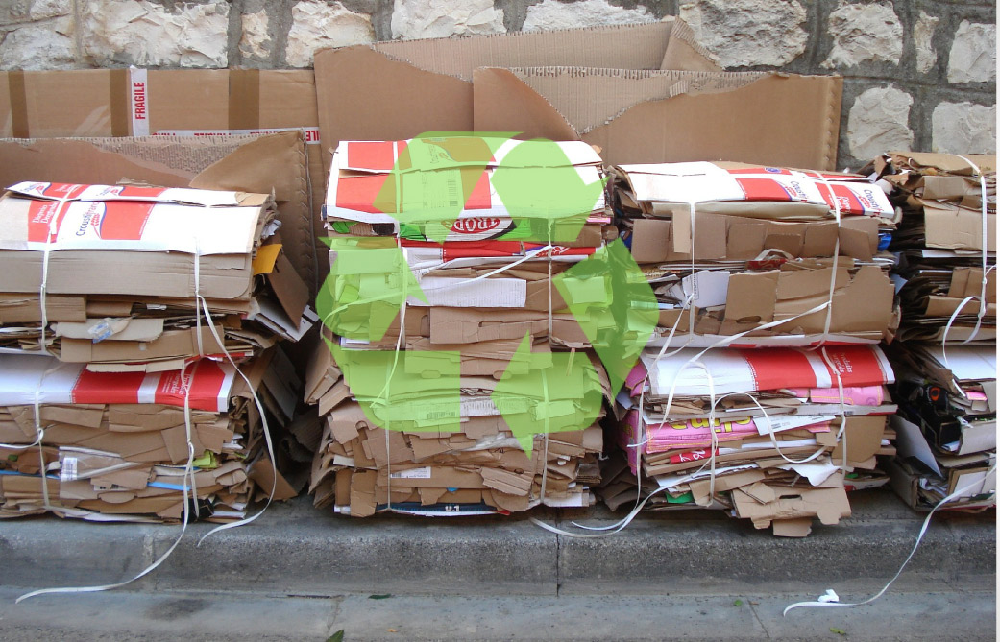
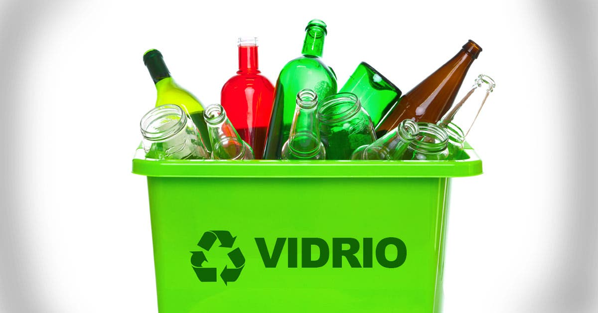
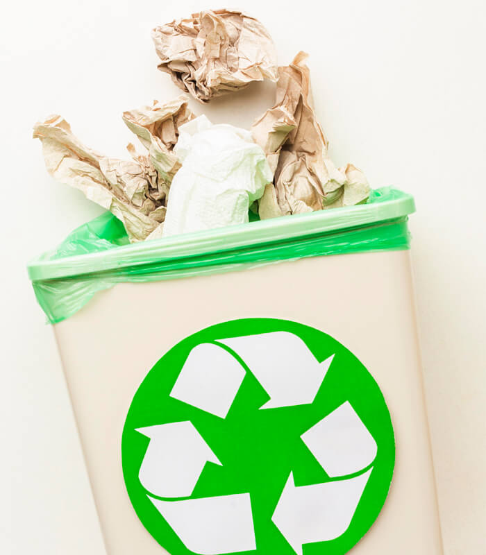
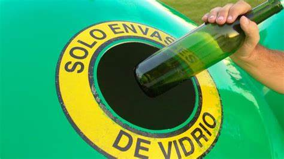
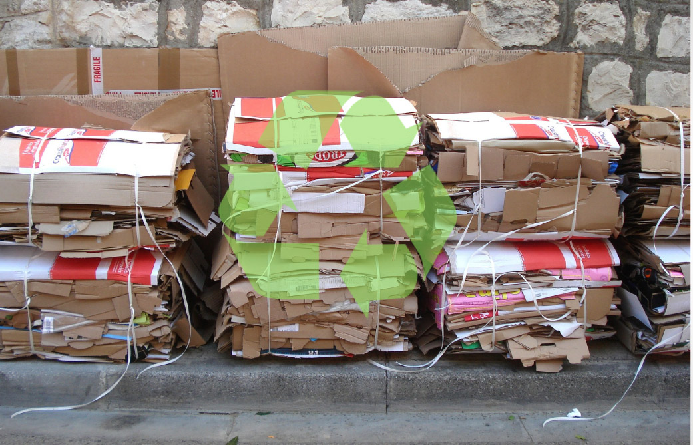